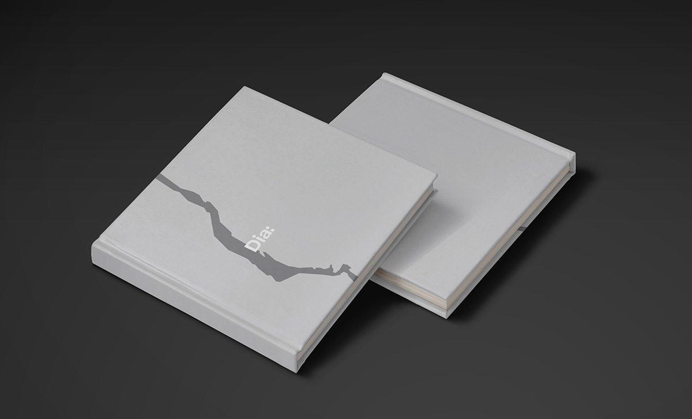
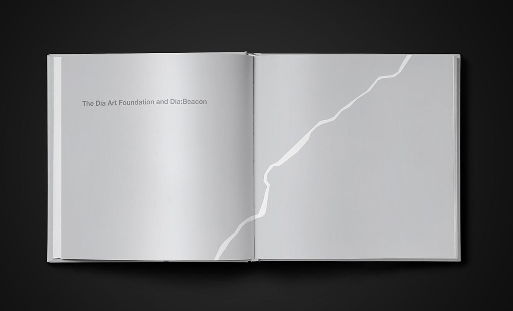
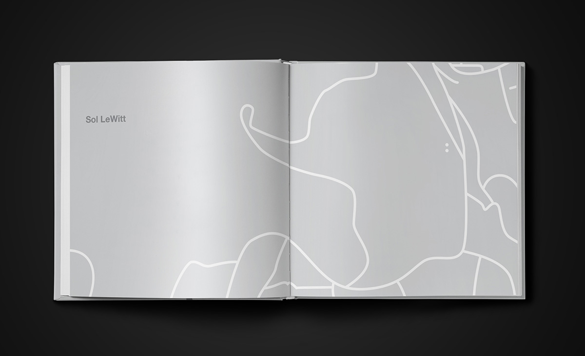
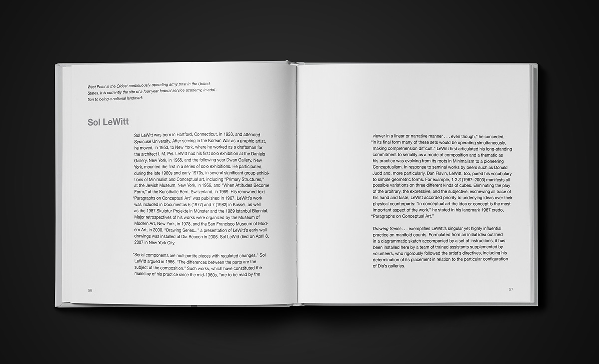
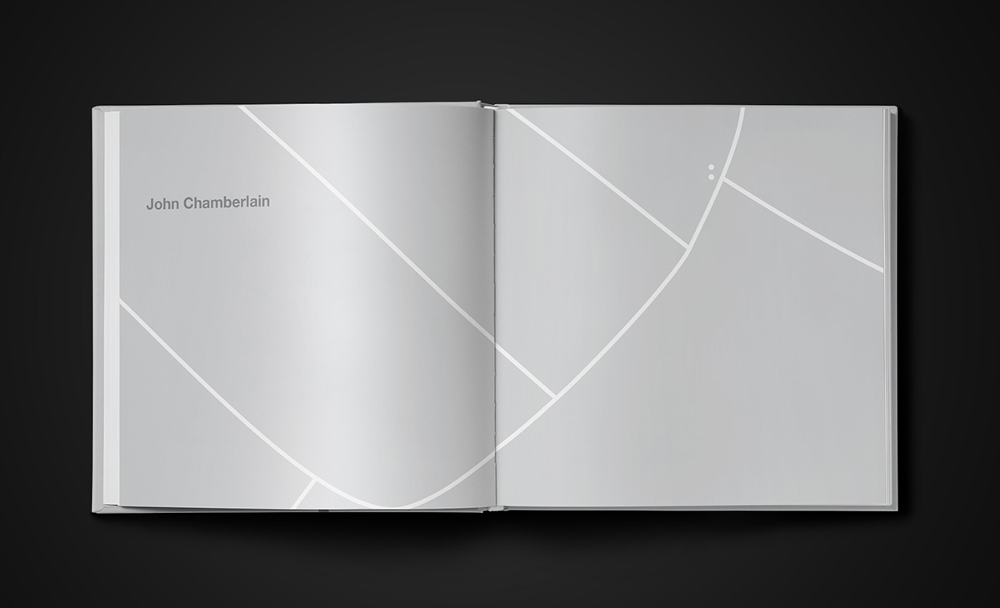
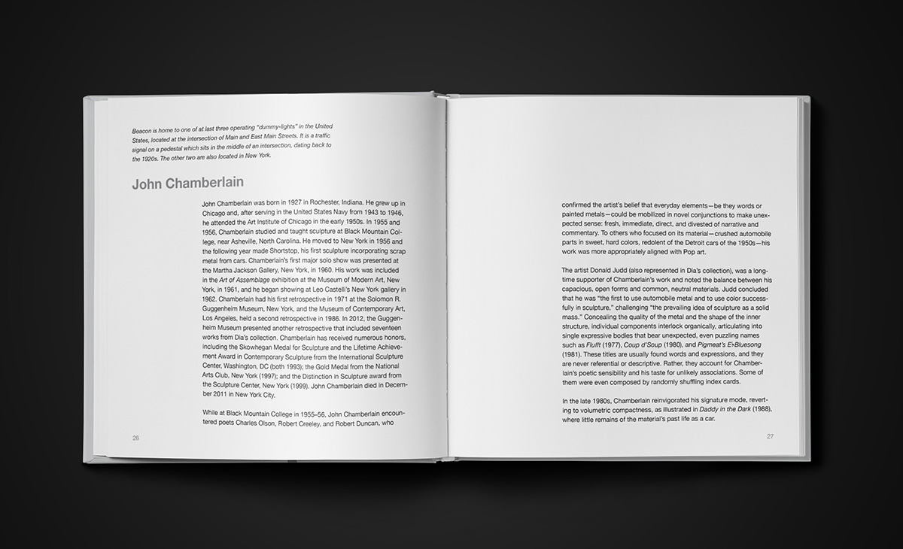
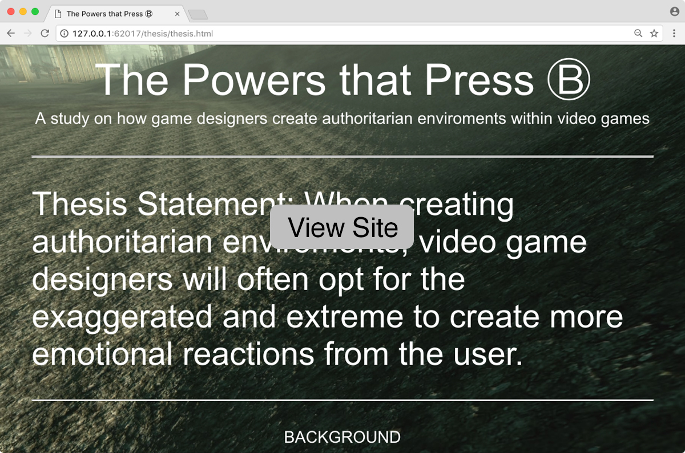

The Other 99 is the product of a 99 days of design challenge. Everyday I designed a room and it's blueprint, each one dedicated to a single activity, pop culture reference, joke, or occasionally all three. View Site
Dia:Beacon is a visitors guide for the contemporary art museum barring the same name. The guide provides information about the displayed artists, while educating visitors about the surrounding area of Beacon, NY. Each artist is connected to a landmark of the Beacon area. For example, the disciplined work of Sol Lewitt connects to West Point military academy.
     The Powers that Press B is thesis project on how game designers create authoritarian environments within video games. Current sources include Star Wars: Knights of the Old Republic, Fallout 3, and Grand Theft Auto V. One project from the thesis is currently available and more are on the way. View Site
